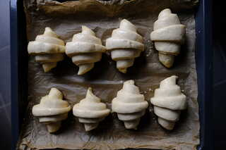
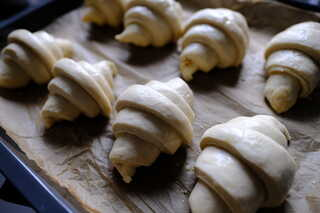

Gesunde Rezepte für Sauerteigbrot und Weiteres
Vegane Croissants? Croissants mit Sauerteig? Vegane Sauerteig-Croissants! Wie ich es zuvor mit dem veganen Sauerteig-Brioche getan habe, wage ich mal wieder eine spezielle Kombination. Vegane Croissants habe ich schon öfter gemacht und mit der veganen Butter Alsan (Bio) sehr gute Erfahrungen gemacht. An Sauerteig Croissants habe ich mich bisher noch nicht herangetraut, da man die Fermentation genaustens kontrollieren muss, damit die Croissants locker werden und die tollen Schichten bilden. Daher ist, wie bei jedem meiner Rezepte, ein sehr aktiver und mild geführter Sauerteig (d.h. eher warme Temperaturen und kurze Abstände, ca. 5 Stunden, zwischen den Fütterungen) wichtig. Außerdem ist, wie ich festgestellt habe, die Herstellung eines Plunderteigs garnicht so aufwändig, vergleichbar mit der eines Sauerteig-Brotes. Das nachfolgende Rezept ist angelehnt an dieses Rezept. Der ganze Prozess dauert etwa 48 Stunden.
Das Rezept ist auf drei Tage aufgeteilt. Am ersten Tag wird der Sauerteig hergestellt und der Teig geknetet. An zweiten Tag wird die Butter eingeschlagen, der Teig wird touriert und die Croissants gebacken. Am dritten Tag werden die Croissants gebacken. Für Croissants zum Sonntagsfrühstück muss der Sauerteig Stufe 1 also Freitag morgens angesetzt werden.
Zuerst wird ein süßer Sauerteig in zwei Stufen hergestellt. Dieser wird auch Lievito Madre genannt. Dazu alle Zutaten für den Sauerteig der ersten Stufe zu einem festen Teig kneten und etwa 8 Stunden abgedeckt bei Raumtemperatur (22 Grad) aufgehen lassen.
Mit dem kompletten Sauerteig der ersten Stufe den Sauerteig und den anderen Zutaten den Sauerteig der zweiten Stufe kneten. Wieder abgedeckt bei Raumtemperatur etwa 5 Stunden aufgehen lassen.
Am Abend des ersten Tages wird der Hauptteig hergestellt. Dazu alle Zutaten bis auf die Butter zu einem festen Teig kneten. Mindestens 10 Minuten kneten, damit sich eine gute Glutenstruktur bilden kann. Zu einer Kugel formen und mit einem scharfen Messer ein großes und tiefes Kreuz einritzen. Dies erleichtert das Ausrollen zu einem Rechteck. In einer verschlossenen Schüssel im Kühlschrank bis zum nächsten Morgen ruhen lassen.
Den Teig auf eine sehr leicht bemehlte Arbeitsfläche geben und auf ein Rechteck der Größe 23x46 cm ausrollen. Die kalte Butterplatte vorsichtig in der Mitte platzieren, am besten ohne sie direkt anzufassen und den Teig von links und rechts über die Butterplatte schlagen, sodass sie komplett bedeckt ist. Die offenen Kanten gut verschließen. In Frischhaltefolie einwickeln und 10 Minuten im Kühlscnrank ruhen lassen.
Nun wird der Teig mit Abstand von 30 Minuten dreimal touriert. Dies ist der Vorgang des Ausrollens und Zusammenfaltens, bei dem die Schichten des Plunderteigs entstehen. Die erste Tour erzeugt 4 Schichten, die zweite und dritte jeweils 3, was insgesamt 4*3*3=36 Schichten ergibt. Dazu den Teig so drehen, dass die offenen Enden links und rechts sind. Dann den Teig der Breite nach ausrollen, sodass es etwa 3 mal so breit ist wie bisher und etwa 8 mm dick ist. Dabei vorsichtig vorgehen und so wenig Druck wie möglich ausüben und von der Mitte nach außen rollen. Wenn sich der Teig immer wieder zurückzieht, kurz entspannen lassen. Die Seiten nun in die Mitte schlagen, sodass sie sich die schmalen äußeren Kanten gerade berühren, dann die beiden Hälften übereinanderschlagen, wie ein Buch. In die Frischhaltefolie einpacken und 30 Minuten im Kühlschrank ruhen lassen. Beim zweiten und dritten Falten wieder den Teig mit der offenen Kante nach links und rechts platzieren. Ausrollen und von den Seiten wie einen Brief einschlagen. Nach der dritten Tour den Teig in Folie eingepackt bis zum Abend im Kühlschrank ruhen lassen. Der Teig sollte in dieser Zeit nicht oder nur leicht aufgehen.
Am Abend vor dem Backen werden nun die Croissants geformt. Dazu den Teig auf eine leicht bemehlte Arbeitsfläche geben und auf ein Rechteck von etwa 20x40 cm mit 8 mm Dicke ausrollen. Wer kleinere Croissants haben möchte, sollte den Teig etwas schmaler und länger auswellen, also ca. 15x50 cm. Nun mit einem scharfen Messer an der Vorderkante (also an der einen langen Kante) alle 10 cm eine Markierung machen, genauso an der gegenüberliegenden langen Kante, hier aber um 5 cm versetzt. Nun die Enden abschneiden und mithilfe der Markierungen gleichschenklige Dreiecke zuschneiden. Es sollten etwa 9-12 Dreiecke entstehen. Die Dreiecke an der kurzen Kante etwa einen cm einschneiden, diese leicht breitziehen und dann vorsichtig, aber eng aufrollen. Mit der Spitze nach unten auf ein Backbleck mit viel Abstand setzen, 6-8 Croissants pro Backbleck. Die Croissants mit einer Mischung aus 2 EL Sojamilch, 1 TL Zuckerrübensirup oder Ahornsirup und 1 Messerspitze Kurkuma (optional) bepinseln, lose mit Frischhaltefolie abdecken und über Nacht bei Raumtemperatur aufgehen lassen. Sie sollten sich im Volumen mehr als verdoppeln.
Den Backofen auf 220 Grad aufheizen. Die Croissants mit der restlichen Milch-Sirup-Mischung bepinseln und blechweise in den Ofen schieben, 5 Minuten backen, die Temperatur auf 190 Grad reduzieren und 20-25 Minuten fertig backen, bis sie gut gebräunt sind. Sie schmecken ab besten leicht warm. Die Croissants lassen sich nach dem Abkühlen auch gut einfrieren und dann bei 180 Grad Umluft in etwa 10 Minuten aufbacken.
 